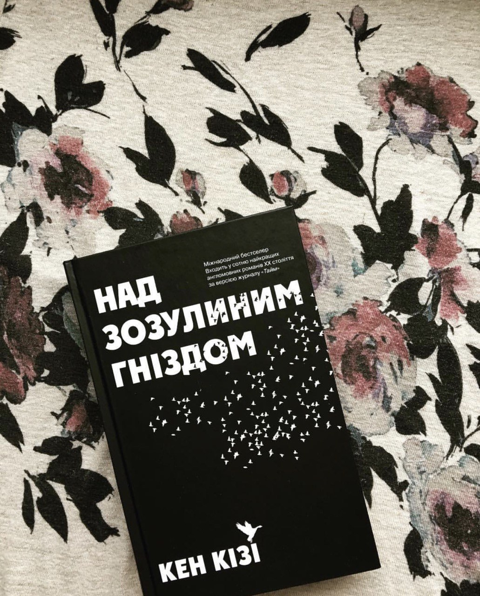

Привіт всім, мене звати Аня, і це мій книжковий блог. Тут я буду ділитись з вами своїми відгуками на прочитані книги. Моїм фаворитом серед літературних жанрів є історичний роман. Останньою книгою, яку я прочитала в даному жанрі була "Сонька" Ігнація Карповича. Книга до щему в серці до сліз на очах. Історія життя однієї жінки, одного кохання та безлічі страждань. Доля Соньки була на стільки трагічною на скільки лише могла бути. Та не зважаючи на усе, що їй приготував той період історії, вона жила. Сонька, як і земля, в період Другої світової війни зазнала стільки кривди та зазіхань, що важко це розуміти та усвідомлювати. Це історія однієї скаліченої жінки, яка народилась не в той час не в тому місці, а їх було безліч, ні в чому не винних. Вони прийшли в цей світ, щоб жити, але історія завжди вносить свої корективи. Війна зламала життя нескінченної кількості жінок, які хотіли просто жити. Також перед нами постає ще один герой - Ігор, який випадково, а, можливо, зовсім і не випадково потрапив в усіма забуте село на польсько-білоруському кордоні, де доживала свій вік Сонька. Ігор по сьогоднішніх мірках є міщанином, але історія завжди до нас повертається. Насправді він Іґнацій, який також походить з околиць даної території, його предки також пережили усі лихоліття війни, але Ігор давно уже викинув це з голови, як і відцурався свого справжнього імені. Але історія завжди повертається... Історія Соньки пройшла крізь мене, як же важко відчувати безсилля, цю безпоміч, коли ти розумієш, що це не фантастика, це історія!
